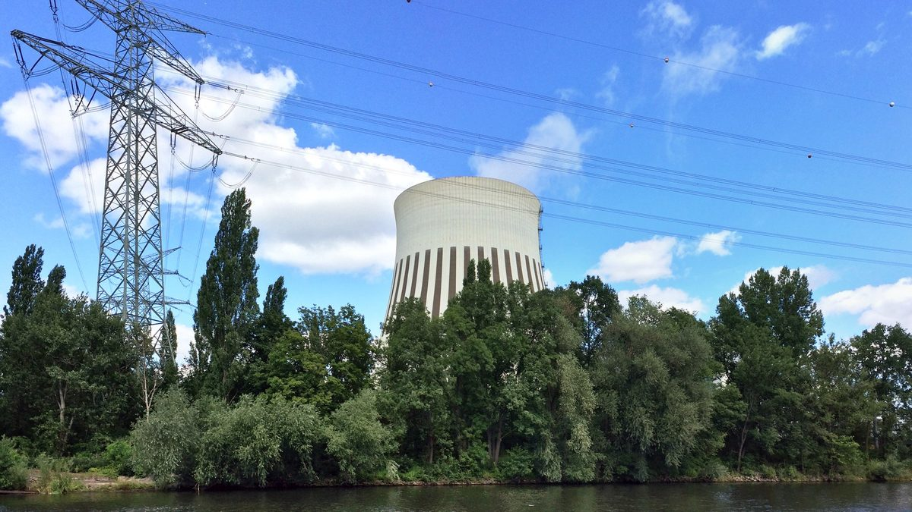

베를린 공영 지역난방 회사 BEW, 유럽투자은행서 5억 유로 대출 한도…"2030년 석탄 끝내고 하수 열 대형 히트펌프로"

첫 2억5,000만 유로 서명·최장 25년…KfW 대출 10억 유로에 이어 2030년까지 약 35억 유로 투자, 상수도공사 하수 열·청소공사 소각장 증기 활용
독일 베를린의 지역난방 회사 BEW(Berliner Energie und Wärme)가 유럽투자은행(EIB)과 5억 유로 규모의 정책 대출 한도에 합의하고 그중 첫 2억5,000만 유로 계약에 서명했다고 EIB가 10월 29일 밝혔으며, 대출 기간은 최장 25년이다. 이 돈은 슈판다우 구 로이터 베스트(Reuter West) 부지에 베를린 상수도공사(Berliner Wasserbetriebe)의 처리된 하수에서 열을 끌어 쓰는 대형 히트펌프를 짓고, 베를린 청소공사(BSR) 쓰레기 소각장의 증기를 활용하는 새 터빈 설비를 갖추는 데 들어가며, 지역난방 주요 연결관의 확장·개량과 망 안의 작은 확장·밀도 높이기 사업에도 쓰인다. BEW는 이에 앞서 독일 개발은행 KfW의 틀 안에서 만기 20년, 모두 10억 유로의 대출도 확보했다. 악셀 핑케르트(Axel Pinkert) BEW 재무 대표는 이번 사업에 석탄 대체와 재생에너지 통합, 피할 수 없는 폐열 활용이 함께 들어 있다고 설명했고, BEW는 2030년까지 지역난방 전환에 약 35억 유로를 투자해 2030년에 석탄을 완전히 끊고 2045년에는 기후중립 열 생산에 이르겠다는 계획을 밝혔다. BEW는 스웨덴 바텐팔(Vattenfall)의 베를린 열 사업 회사를 베를린주가 사들이면서 2024년 5월 2일부터 주가 100% 소유한 공기업이 됐으며, 회사 설명으로는 베를린의 약 70만 가구에 지역난방을 공급한다.
시민에너지 관점
민간 에너지기업이 갖고 있던 대도시 열 회사를 주정부가 되사들인 지 2년 반 만에, 25년짜리 유럽 정책금융과 20년짜리 국내 개발은행 대출을 묶어 2030년 석탄 퇴출 일정을 돈으로 뒷받침하게 됐다. 재공영화를 하면 인수 비용에 전환 투자까지 공공이 떠안는다는 우려가 따르지만, 공공 소유 회사는 길고 싼 공공자금을 끌어오기 쉽고, 상수도공사의 하수 열과 청소공사의 소각장 증기처럼 공공기관끼리 버려지던 열을 주고받는 협력도 한결 수월하다. 다만 회사가 공공 소유라고 해서 이용자의 몫과 목소리가 저절로 생기지는 않으므로, 요금과 투자 우선순위를 정하는 자리에 이용 주민이 참여하는 구조가 함께 가야 한다. 국내 지자체도 지역난방·열 공급을 공공 소유로 두고, 하수처리장·소각장 열을 쓰는 사업에 주민 열 협동조합이 출자하고 의견을 낼 수 있는 자리를 처음부터 마련해야 한다.
출처: The Brussels Times 2026-10-29 The Brussels Times Newsroom 원문 보기
출처: BEW 회사 소개(소유 구조·공급 가구 확인) 2026-10-30 원문 보기
ベルリンの公営地域暖房会社BEW、欧州投資銀行から5億ユーロの融資枠…「2030年に石炭をやめ、下水熱の大型ヒートポンプへ」
第1弾2億5,000万ユーロに署名・最長25年…KfWの融資10億ユーロに続き2030年までに約35億ユーロを投資、上下水道公社の下水熱・清掃公社の焼却施設の蒸気を活用
ドイツ・ベルリンの地域暖房会社BEW（Berliner Energie und Wärme）が欧州投資銀行（EIB）と5億ユーロ規模の政策融資枠で合意し、そのうち第1弾の2億5,000万ユーロの契約に署名したと、EIBが10月29日に発表した。融資期間は最長25年。資金はシュパンダウ区のロイター・ヴェスト（Reuter West）の敷地に、ベルリン上下水道公社（Berliner Wasserbetriebe）の処理済み下水から熱を取り出す大型ヒートポンプを建設し、ベルリン清掃公社（BSR）のごみ焼却施設の蒸気を活用する新しいタービン設備を整えるために使われ、地域暖房の主要連結管の拡張・改良や、網内の小規模な拡張・高密度化の事業にも充てられる。BEWはこれに先立ち、ドイツの開発銀行KfWの枠組みで満期20年、総額10億ユーロの融資も確保している。アクセル・ピンケルト（Axel Pinkert）BEW財務担当取締役は、今回の事業には石炭の代替、再生可能エネルギーの統合、避けられない廃熱の活用が含まれると説明し、BEWは2030年までに地域暖房の転換に約35億ユーロを投資し、2030年に石炭から完全に脱却、2045年に気候中立の熱生産を実現する計画を示した。BEWは、スウェーデンのヴァッテンフォール（Vattenfall）のベルリン熱事業会社をベルリン州が買い取ったことで、2024年5月2日から州が100％所有する公営企業となり、会社の説明によればベルリンの約70万世帯に地域暖房を供給している。
市民エネルギーの視点
民間エネルギー企業が持っていた大都市の熱供給会社を州が買い戻してから2年半で、25年の欧州の政策金融と20年の国内開発銀行の融資を組み合わせ、2030年の石炭廃止の日程を資金面で裏付けることになった。再公営化をすれば買収費用に転換投資まで公共が背負うことになるという懸念はあるが、公営の会社は長期で低利の公的資金を引き出しやすく、上下水道公社の下水熱や清掃公社の焼却施設の蒸気のように、公共機関どうしで捨てられていた熱をやり取りする協力もずっと進めやすい。ただし、会社が公営だからといって利用者の取り分や声が自然に生まれるわけではないため、料金や投資の優先順位を決める場に利用する住民が参加する仕組みも合わせて整える必要がある。韓国の自治体も地域暖房・熱供給を公共の所有とし、下水処理場や焼却施設の熱を使う事業に住民の熱協同組合が出資し意見を出せる席を、最初から用意すべきだ。
出典: The Brussels Times 2026-10-29 The Brussels Times Newsroom 原文を読む
出典: BEW 会社紹介（所有構造・供給世帯の確認） 2026-10-30 原文を読む
柏林公营区域供热公司BEW获欧洲投资银行5亿欧元贷款额度，"2030年告别煤炭，改用污水热大型热泵"
首批2.5亿欧元已签署、期限最长25年；继KfW 10亿欧元贷款之后，2030年前投资约35亿欧元，利用供水公司污水热和清洁公司焚烧厂蒸汽
欧洲投资银行（EIB）10月29日宣布，德国柏林区域供热公司BEW（Berliner Energie und Wärme）与其商定了5亿欧元的政策性贷款额度，并签署了其中首批2.5亿欧元的合同，贷款期限最长25年。这笔资金将用于在施潘道区罗伊特西（Reuter West）厂址建设从柏林供水公司（Berliner Wasserbetriebe）处理后的污水中提取热量的大型热泵，并配置利用柏林清洁公司（BSR）垃圾焚烧厂蒸汽的新涡轮机设备，同时也用于区域供热主干连接管道的扩建和改造，以及管网内的小规模扩展和加密项目。此前，BEW已在德国开发银行KfW框架下获得期限20年、总额10亿欧元的贷款。BEW财务董事阿克塞尔·平克特（Axel Pinkert）表示，这些项目涵盖替代煤炭、整合可再生能源以及利用不可避免的余热；BEW并公布计划，到2030年投入约35亿欧元推进区域供热转型，2030年完全淘汰煤炭，2045年实现气候中和的热力生产。BEW原为瑞典大瀑布（Vattenfall）的柏林供热公司，柏林州将其收购后，自2024年5月2日起成为州政府100%持有的公营企业，据公司介绍，为柏林约70万户提供区域供热。
市民能源视角
州政府从民营能源企业手中买回这家大城市供热公司仅两年半，就把25年期的欧洲政策性融资和20年期的国内开发银行贷款结合起来，为2030年淘汰煤炭的时间表提供了资金保障。有人担心重新公营化后收购费用加上转型投资都要由公共部门承担，但公营公司更容易获得长期低息的公共资金，像供水公司的污水热、清洁公司焚烧厂的蒸汽这样，公共机构之间交换原本被浪费的热量的合作也更容易推进。不过，公司归公共所有并不意味着用户的份额和声音会自动产生，因此在决定热价和投资优先顺序时，还应同时建立让使用者居民参与的机制。韩国地方政府也应把区域供热和热力供应留在公共所有之下，并从一开始就为居民热力合作社出资、参与利用污水处理厂和焚烧厂余热的项目并表达意见留出位置。
来源: The Brussels Times 2026-10-29 The Brussels Times Newsroom 查看原文
来源: BEW 公司介绍（核实所有权结构和供热户数） 2026-10-30 查看原文
Berlin's publicly owned district heating company BEW secures €500 million EIB loan facility to "end coal by 2030 and switch to large wastewater heat pumps"
First €250 million tranche signed with terms of up to 25 years; after €1 billion in KfW loans, about €3.5 billion to be invested by 2030, using wastewater heat from the water utility and steam from the city cleaning company's incinerator
BEW (Berliner Energie und Wärme), the district heating company in Berlin, has agreed a €500 million promotional loan facility with the European Investment Bank (EIB) and signed a first tranche of €250 million, with terms of up to 25 years, the EIB announced on October 29. The money will go toward a large heat pump at the Reuter West site in Spandau that will draw heat from treated wastewater supplied by the city water utility Berliner Wasserbetriebe, a new turbine plant using steam from the waste-to-energy plant of the city cleaning company BSR, the expansion and upgrading of key interconnecting heating pipelines, and smaller growth and densification projects within the network. BEW had earlier secured loans totalling €1 billion with 20-year maturities under a facility of Germany's state development bank KfW. Axel Pinkert, BEW's managing director of finance, said the projects combine replacing coal, integrating renewable sources and using unavoidable waste heat, and BEW said it plans to invest around €3.5 billion in transforming its district heating by 2030, phasing out coal entirely by 2030 and reaching climate-neutral heat generation by 2045. BEW became a company wholly owned by the State of Berlin on May 2, 2024, when the state bought Vattenfall's Berlin heating business from the Swedish group, and according to the company it supplies district heating to around 700,000 homes in the city.
Citizen Energy View
Two and a half years after the state bought back a big-city heating company from a private energy group, it has combined 25-year European policy finance with 20-year loans from a national development bank to put money behind its 2030 coal exit. Remunicipalisation raises the worry that the public must shoulder both the purchase price and the cost of the transition, yet a publicly owned company finds it easier to raise long-term, low-cost public money and to cooperate with other public bodies, as with wastewater heat from the water utility and steam from the cleaning company's incinerator, so that heat once thrown away is put to use. Public ownership alone, however, does not automatically give users a share or a voice, so it should come with structures that let residents who use the heat take part in decisions on prices and investment priorities. Korean local governments, too, should keep district heating and heat supply in public hands and make room from the outset for residents' heat cooperatives to invest in, and have a say over, projects that use heat from sewage treatment plants and incinerators.
Source: The Brussels Times 2026-10-29 The Brussels Times Newsroom Read the original
Source: BEW company profile (ownership and households served) 2026-10-30 Read the original